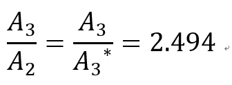
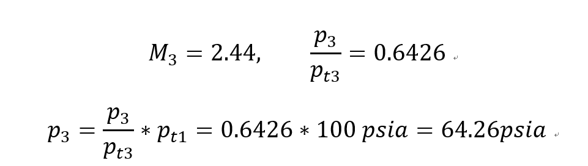
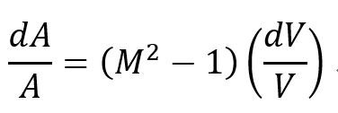

이제 두번째 마지막 Nozzle type 인 Convering & Diverging Nozzle에 대해서 알아보자
지금 뭐하고 있는건지 잠깐 다시 remind 하면 Quick review
Gas dynamics에서 3가지 Factor들이 유체의 흐름에 영향을 준다.
1. Area change
2. Friction
3. Heat transfer
Factors 중에서 Area change 가 있을 경우 (without friction, heat transfer)
유체의 흐름이 어떻게 될까?? 에 대해서 분석 중이고
Area change 를 가장 잘 나타내는 nozzle 중에서 Converging Diverging nozzle 에 대해서 탐구하고자 한다.
Assumptions
-Steady state
- 1-D process
-No heat transfer
- No shaft work
- Negligible potential
-No Friction
![[Gas Dynamics] Ch 5 Varying - Area Adiabatic Flow - part4- Converging-diverging nozzle](./images/img-001.png)
우리는 위 사진과 같이 Area의 비율을 사용자의 설정대로 Nozzle을 설계할 수 있고
이전 nozzle과 똑같이 Receiver Pressure 이 감소함에 따라서 어떻게 유체의 흐름이 바뀔 것이다.
분석하기 앞서서 노즐의 흐름이 가장 효율적인 경우가 언제일까? 에 대해서 생각해보자
가장 이해가기 쉬운 것은 ch5 part1 에서 배웠던 면적변화에 따른 유체의 property변화를 관찰하는 것이다.
![[Gas Dynamics] Ch 5 Varying - Area Adiabatic Flow - part4- Converging-diverging nozzle](./images/img-002.png)
![[Gas Dynamics] Ch 5 Varying - Area Adiabatic Flow - part4- Converging-diverging nozzle](./images/img-003.png)
[ch5 part1 에서유도한 식]
즉 우리의 목표는 유체의 속도를 마찰 손실 없이 극대화 하는 것이다.
따라서 M>1 일때 dA>0 이면 dV>0 임을 이용하여
Converging 과정을 통해서 subsonic -> sonic 을 만들어주고
이후 Diverging 과정을 통해서 sonic -> supersonic을 만들어 주는게 최종 목표이라는 것
+++ 마찰 손실없이 Entropy 변화 = 0 즉 Isentropic process까지 덤으로
그러면 먼저 subsonic->sonic->supersonic 일 경우 receiver pressure이 어떻게 되어야 하는지를
밑의 문제에서 한 번 알아보자
(그때가 가장 최적의 상태이기 때문)
State 1->State 2 (subsonic->sonic)
State 2 에서 Ma = 1 이므로 dA = 0
State 2->State 3 (sonic->supersonic)
First, 모든 과정이 Isentropic과정이므로 2->3번 과정을 3->3 과정이라고 해석 할 수 있다.
why?? 2번에서 Ma = 1 이고 Isentropic 과정을 통해서 State 3 으로 갔기 때문에
Reference 정의에 딱 들어맞음.
따라서 A2 = A3 임을 알 수 있다.

Reference 과 static 면적비율로 우리는 Isentropic table 에서 Ma3, p3/pt3 비율을 알 수 있다.
근데 여기서 잠깐 Table을 잘보면 A/A* = 2.494 인 경우가
Ma =0.24, 2.44 두개 임을 알 수 있다
여기서 우리는 최적의 상태를 분석하기 때문에
1->2->3
subsonic -> sonic -> supersonic
따라서 Ma = 2.44 인 녀석이 우리의 관심사라는 것
By Appendix G

[pt1 = pt3 why? Isentropic process, 즉 Entropy 변화가 없으므로 1,2,3 Stagnation pressure은 계속해서 일정]
따라서 최적의 압력 = 64.24psia임을 확인 하였다.
이제 밑으 표를 보면 Design Operation 에서의 압력이 우리가 구한 Pressure=64.24 임을 알 수 있다.
계속해서 압력은 감소하고, 속도는 증가하며 Throat(State 2, Ma =1, dA =0) 인 지점에서 Sonic flow인 경우
![[Gas Dynamics] Ch 5 Varying - Area Adiabatic Flow - part4- Converging-diverging nozzle](./images/img-006.png)
그렇다면 여기서 우리는 First critical subsonic exhaust 에 눈길이 가게 된다.
왜냐면 First, second 도 안하고 Third로 바로 했으니까
아까 Ma 경우의수가
0.24, 2.44
2가지 였고 Ma>1인 경우가 최적의 설계이기 때문에 골랐었다.
그 다른 Ma = 0.24인 경우가 바로 First critical pressure의 경우인 것이다.
![[Gas Dynamics] Ch 5 Varying - Area Adiabatic Flow - part4- Converging-diverging nozzle](./images/img-007.png)
위의 계산을 통해서 First critical pressure = 96.07psia 임을 확인하였다.
즉 First critical pressure의 경우
1->2->3
subsonic-> sonic -> subsonic
Converging nozzle에서 속도가 증가하다가
Throat 에서 Sonic flow가 되었지만
Diverging part에서는 속도가 감소하여 다시 Subsonic이 된 것.
reversly Third critical pressure 의 경우
1->2->3
subsonic-> sonic ->
supersonic
Converging nozzle에서 속도가 증가하다가
Throat 에서 Sonic flow가 되었고
Diverging part에서는 다시 증가하여 다시 Supersonic이 된 것.
마무리
이제 first, third 압력 말고 다른 압력인 경우 전체적으로 분석하고 마무리 해보자
기본적으로 P1 = 100psia (pressure in the chamber, 왼쪽 그림) 인 경우에서
Receiver pressure (Prec) 를 100psia에서 시작해서 점점 감소시키면서 흐름이 어떻게 바뀌는지 분석해보자

1. Pressure (receiver) > Pressure (first critical) 인경우 ( 그래프 case c )
P1과 압력차이가 크지 않아서 Throat 에서 Sonic flow에 도달 하지 못한다.
2. Pressure (receiver) = Pressure (first critical) 인경우 ( 그래프 case b )
압력차이가 어느정도 생겨서 속도가 증가하여
State 2 에서 Ma =1 달성
3. Pressure (receiver) = Pressure (Third critical) 인경우 ( 그래프 case a ), Design Condition
압력차이가 커서 속도가 증가하여
State 2 에서 Ma =1 달성 후 supersonic 까지 달성
이렇게 길게 분석하였음에도 다음과 같은 궁금증들이 아직 존재한다.
그렇다면 Second Critical pressure 은 어디일까??
First, third 사이에서는 유동이 어떻게 될까?
Third 보다 더 작으면 또 어떻게 될까??
이 모든 질문들의 해답은 다음 Chapter 6, Chapter 7 에서 찾을 수 있다는 점.
열전달 수업시간이 다가와 가보겠습니다ㅎ